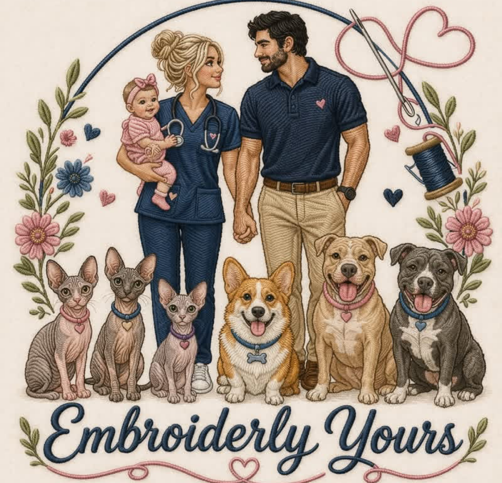
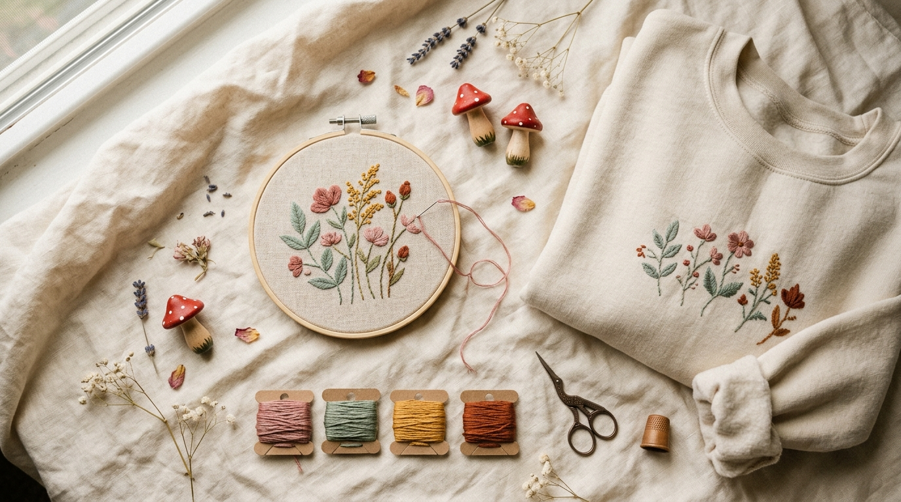

Nurse, wife, mama — and the heart and hands behind Embroiderly Yours.

A little about me
I'm Lily — married to my best friend, Joseph, and mama to our sweet girl. Our house is a full and happy one, with three sphynx kitties and three dogs who keep us on our toes. When I'm not being a nurse or a mom, you'll usually find me at my embroidery machine, making something special for someone.
I was in college studying to become a registered nurse, working at Hobby Lobby in my free time, when I first picked up hand embroidery. I did it by hand for about a year — and then I was gifted an embroidery machine one Christmas, and that's when everything started picking up. Since then I've grown into two embroidery machines and a DTF printer, and I've never looked back.
Why it matters
There are a lot of embroidery businesses out there, and I love being part of such a creative community. But when you choose to support mine, you're choosing something personal.
I don't just make items — I put care, time, and heart into every single piece. I genuinely love bringing your ideas to life and making something meaningful, just for you.
Your order matters to me. I take pride in my work, communicate honestly, and make sure everything is done with real attention to detail.
Your support goes further than you might realize — it helps support my family, and that means everything to me. If you want something made with love, I'd be honored to make it.

From my machine to you